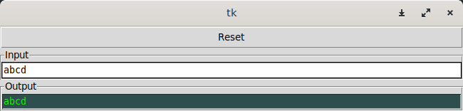

À présent, nous allons compléter notre ordinateur en lui ajoutant une interface
de communication série qui lui permettra d’échanger des données avec un autre
équipement, comme un PC par exemple.
Grâce à cette interface, l’entité Computer pourra :
Si ce n’est pas déjà fait, ouvrez votre projet Computer dans Vivado :
cd $HOME/CoCiNum
./scripts/vivado vivado/Computer/Computer.xpr
Dans le panneau, Flow Navigator, exécutez l’action Add Sources, choisissez Add or create design sources et pressez le bouton Next.
Ajoutez les fichiers source VHDL suivants à votre projet.
Tous ces fichiers sont situés dans des sous-dossiers de CoCiNum/src/vhdl.
| Sous-dossier | Fichier | Rôle |
|---|---|---|
UART |
SerialReceiver.vhd |
Un récepteur série asynchrone. |
UART |
SerialTransmitter.vhd |
Un transmetteur série asynchrone. |
UART |
UART.vhd |
Une entité qui rassemble un récepteur et un transmetteur série. |
Virgule |
VInterruptController.vhd |
Un contrôleur d’interruptions pour le processeur Virgule. |
Computer |
Loader_pkg.vhd |
Un programme de démarrage pour l’entité Computer. |
Dans le panneau, Flow Navigator, exécutez à nouveau l’action Add Sources, choisissez Add or create constraints et pressez le bouton Next.
Ajoutez le fichier de contraintes suivant à votre projet :
| Sous-dossier | Fichier | Rôle |
|---|---|---|
Basys3 |
Basys3_UART.xdc |
Fichier de contraintes pour Vivado, brochage de l’interface série. |
L’entité VInterruptController peut gérer les événements ou les demandes
d’interruption de 32 sources connectées à chaque bit de son entrée events_i.
Lorsqu’elles sont autorisées, il transmet les demandes d’interruption au
processeur sur irq_o.
| Port | Direction | Type | Rôle |
|---|---|---|---|
clk_i |
Entrée | Logique | Le signal d’horloge global |
reset_i |
Entrée | Logique | La commande de réinitialisation |
valid_i |
Entrée | Logique | Demande de transfert de donnée |
ready_o |
Sortie | Logique | Indicateur de fin d’une lecture ou d’une écriture |
address_i |
Entrée | Logique | Le bus d’adresses |
write_i |
Entrée | Vecteur de 4 bits | Sélection des octets à écrire |
wdata_i |
Entrée | Vecteur de 32 bits | Le bus de données en écriture |
rdata_o |
Sortie | Vecteur de 32 bits | Le bus de données en lecture |
events_i |
Entrée | Vecteur de 32 bits | Indicateurs d’événements ou de demandes d’interruptions de chaque périphérique |
irq_o |
Sortie | Logique | Demande d’interruption (interrupt request) |
VInterruptController est aussi un périphérique que le processeur peut
configurer et interroger.
Son entrée address_i est sur un bit car il n’y a que deux registres :
address_i |
Registre | Rôle |
|---|---|---|
'0' |
mask_reg |
Masque de 32 bits qui indiquent quelles sources d’interruptions sont autorisées. |
'1' |
events_reg |
Indicateurs de chaque événement en attente de traitement. |
Typiquement, dans un programme qui gère des interruptions, on
configurera mask_reg pour choisir à quels événements on souhaite réagir.
À chaque fois qu’une interruption sera demandée :
events_reg pour identifier le type d’événement à traiter.'1' dans le bit du registre events_reg correspondant à cet
évenement pour indiquer que celui-ci a été traité.Les entités SerialTransmitter et SerialReceiver seront utilisées
pour réaliser une interface de communication série communément appelée
UART (Universal Asynchronous Receiver Transmitter).
Cette interface permettra au processeur de communiquer avec votre PC à
travers une interface série/USB.
Dans le fichier UART/UART.vhd nous fournissons un composant UART
composé d’un transmetteur et d’un récepteur.
Il possède les paramètres génériques suivants afin
de régler ses diviseurs de fréquence internes :
| Paramètre | Type | Rôle |
|---|---|---|
CLK_FREQUENCY_HZ |
Entier | La fréquence de l’horloge clk_i, en Hz |
BIT_RATE_HZ |
Entier | La vitesse de communication série, en bits par seconde |
Et voici la liste de ses ports :
| Port | Direction | Type | Rôle |
|---|---|---|---|
clk_i |
Entrée | Logique | Le signal d’horloge global |
reset_i |
Entrée | Logique | La commande de réinitialisation |
valid_i |
Entrée | Logique | Demande de transfert de donnée |
ready_o |
Sortie | Logique | Indicateur de fin d’une lecture ou d’une écriture |
write_i |
Entrée | Logique | La commande d’écriture |
wdata_i |
Entrée | Vecteur de 8 bits | Le bus de données en écriture (octet à envoyer) |
rdata_o |
Sortie | Vecteur de 8 bits | Le bus de données en lecture (octet reçu) |
tx_evt_o |
Sortie | Logique | Indicateur de fin de transmission |
rx_evt_o |
Sortie | Logique | Indicateur de fin de réception |
tx_o |
Sortie | Logique | La ligne de transmission série |
rx_i |
Entrée | Logique | La ligne de réception série |
Le fichier Loader_pkg.vhd contient un programme de démarrage et de chargement.
Son rôle est de recevoir un autre programme par la liaison série,
de le charger en mémoire et de l’exécuter.
Cela évitera de resynthétiser l’entité Computer à chaque fois que vous voudrez
exécuter un nouveau programme.
Computer_pkgDans le fichier Computer_pkg.vhd, modifiez la constante MEM_CONTENT
pour que le programme initial chargé en mémoire soit celui défini dans le
paquetage Loader_pkg :
constant MEM_CONTENT : word_vector_t := work.Loader_pkg.DATA;
Ajoutez des constantes pour définir les caractéristiques des nouveaux périphériques du système :
| Constante | Type | Valeur | Rôle |
|---|---|---|---|
INTC_ADDRESS |
Octet | 81hex | Les bits 31 à 24 de l’adresse pour accéder au contrôleur d’interruption. |
UART_ADDRESS |
Octet | 82hex | Les bits 31 à 24 de l’adresse pour accéder à l’interface série. |
UART_BIT_RATE_HZ |
Entier | 115200 | La vitesse de communication de l’interface série, en bits/seconde. |
INTC_EVENTS_UART_RX |
Entier | 0 | Pour le contrôleur d’interruptions, le numéro de l’événement indiquant la réception d’un octet sur l’interface série. |
INTC_EVENTS_UART_TX |
Entier | 1 | Pour le contrôleur d’interruptions, le numéro de l’événement indiquant la fin de l’envoi d’un octet sur l’interface série. |
ComputerDans le fichier Computer.vhd, modifiez l’entité Computer en ajoutant les
ports suivants :
| Port | Direction | Type | Rôle |
|---|---|---|---|
uart_rx_i |
Entrée | Logique | La ligne de réception série |
uart_tx_o |
Sortie | Logique | La ligne de transmission série |
StructuralDans le fichier Computer.vhd, dans l’architecture Structural,
modifiez l’instance sync_inst pour lui ajouter une entrée et une sortie
supplémentaires que vous connecterez de la manière indiquée ci-dessous.
Ensuite, instanciez les entités UART et VInterruptController
représentées sur ce schéma.
Pensez à déclarer les signaux manquants.
Le rectangle rose en pointillés, au centre du schéma, représente toutes les instructions d’affectation concurrentes qui gèrent la communication entre le processeur et ses périphériques.
Complétez l’architecture pour que le processeur puisse communiquer avec l’UART et le contrôleur d’interruptions.
Représentez sous forme de tableau le nouveau plan d’adressage du système en incluant :
mask_reg et events_reg du contrôleur d’interruptions,Faites valider votre plan d’adressage par l’enseignant de votre groupe.
Pour un premier test du système en simulation, nous allons utiliser
un programme simple qui réalise un écho, c’est-à-dire qu’il retransmet
chaque octet qu’il reçoit sur la liaison série.
Le programme se trouve dans le dossier CoCiNum/src/asm/Echo.
.set INTC_ADDRESS, 0x81000000
.set UART_ADDRESS, 0x82000000
.set INTC_EVENTS_UART_RX, 0x00000001
.set INTC_EVENTS_UART_TX, 0x00000002
.global main
main:
li x5, INTC_ADDRESS
li x6, UART_ADDRESS
main_rx_loop:
lw x7, 4(x5) /* Lire le registre events_reg du contrôleur d'interruptions. */
andi x7, x7, INTC_EVENTS_UART_RX /* Isoler le bit indicateur de l'événement "réception" de l'UART. */
beqz x7, main_rx_loop /* S'il est égal à zéro, continuer la boucle d'attente. */
sw x7, 4(x5) /* Sinon, remettre à zéro l'indicateur d'événement. */
lbu x8, (x6) /* Lire l'octet de donnée reçu sur l'entrée série. */
sb x8, (x6) /* Envoyer le même octet sur la sortie série. */
main_tx_loop:
lw x7, 4(x5) /* Lire le registre events_reg du contrôleur d'interruptions. */
andi x7, x7, INTC_EVENTS_UART_TX /* Isoler le bit indicateur de l'événement "transmission" de l'UART. */
beqz x7, main_tx_loop /* S'il est égal à zéro, continuer la boucle d'attente. */
sw x7, 4(x5) /* Sinon, remettre à zéro l'indicateur d'événement. */
j main_rx_loop /* Retourner à la boucle d'attente de réception. */
Les blocs d’instructions désignés par les étiquettes main_rx_loop et main_tx_loop
réalisent des boucles d’attente dans lesquelles le programme interroge de façon
répétitive le registre events_reg du contrôleur d’interruptions
(à l’adresse 81000004hex).
Des opérations de masquage (andi) isolent le bit indicateur d’un événement
en émission ou en réception.
Les boucles d’attente s’exécutent tant que le bit testé est nul (beqz).
Lorsqu’un événement a été détecté, une instruction sw commande la remise à
zéro de l’indicateur correspondant dans le registre events_reg.
L’instruction lbu est utilisée pour lire l’octet reçu.
L’instruction sb écrit cet octet vers l’UART pour qu’il soit transmis.
Ce programme n’utilise pas d’interruptions. La détection des événements s’effectue avec des boucles d’attente selon le principe de l’attente active (également appelée scrutation, ou en anglais, polling).
Nous utiliserons les interruptions au cours de l’activité suivante.
Compilez le programme Echo.s pour produire un paquetage VHDL Echo_pkg :
cd $HOME/CoCiNum/src/asm/Echo
make
La simulation s’appuie sur une version alternative du paquetage Computer_pkg
située dans le sous-dossier Computer/tests-uart.
Vous ne devez pas modifier pas votre fichier Computer_pkg.vhd !
En simulation, nous utiliserons directement le programme Echo :
constant MEM_CONTENT : word_vector_t := work.Echo_pkg.DATA;
Pour éviter de surcharger votre PC, les fréquences d’horloge et de communication seront plus petites que sur le vrai matériel :
constant CLK_FREQUENCY_HZ : positive := 10e3;
constant UART_BIT_RATE_HZ : positive := 1e3;
Démarrez la simulation en exécutant les commandes suivantes :
cd $HOME/CoCiNum/src/vhdl/Computer/tests-uart
make
Si tout s’est bien passé, la fenêtre ci-dessous doit s’afficher.
Dans le cas contraire, vérifiez les messages d’erreurs, corrigez votre fichier
Computer.vhd et relancez la commande make.

Entrez des caractères dans le champ de texte Input. Ces caractères sont envoyés
à votre entité Computer par son entrée série.
Vérifiez que le programme Echo s’exécute correctement.
Les caractères reçus doivent être renvoyés par Computer sur sa sortie série
et doivent s’afficher dans le champ Output.
Le programme de test enregistre tous les signaux du système dans un fichier. Ne laissez pas la fenêtre ouverte trop longtemps pour éviter de saturer votre espace de stockage.
Après avoir fermé la fenêtre tk, affichez les chronogrammes à l’aide de la commande suivante :
gtkwave -S Computer.tcl Computer.ghw
Réglez le niveau de zoom et faites défiler les chronogrammes de manière à
observer les changements des signaux uart_rx_i, uart_tx_o, uart_rx_evt et uart_tx_evt.
En faisant le lien avec le programme Echo.s, expliquez ce que vous obtenez.
Dans Vivado, générez le fichier binaire à charger dans le FPGA : Flow Navigator → Program and Debug → Generate Bitstream.
Si ce n’est pas déjà fait, reliez le connecteur micro-USB de la carte à un port USB de votre PC et mettez la carte sous tension.
Connectez Vivado à votre carte Basys3 : Flow Navigator → Program and Debug → Open Hardware Manager → Open Target → Auto-connect.
Configurez le FPGA : Flow Navigator → Program and Debug → Open Hardware Manager → Program Device.
Nous allons utiliser le logiciel GTKTerm pour communiquer avec l’ordinateur embarqué dans notre FPGA par liaison série sur USB :
cd $HOME/CoCiNum
./scripts/gtkterm
Dans le menu Configuration de GTKTerm, activez l’option CR LF auto.
GTKTerm est déjà configuré pour utiliser le port série /dev/ttyUSB1
avec 8 bits de données, 1 bit d’arrêt, pas de contrôle de parité.
Forcez un redémarrage du processeur en pressant le bouton-poussoir central de la carte Basys3.
La fenêtre GTKTerm doit à présent afficher le texte :
\\// This is the Virgule program loader.
\\// Send an hex file to execute or press ESC to switch into interactive mode.
Pour continuer, nous devons donc envoyer un programme au format Intel HEX par liaison série vers le FPGA.
Nous allons reprendre le programme Echo.s, mais au lieu de le convertir
en VHDL, nous allons produire un fichier Echo.hex.
Exécutez les commandes suivantes dans un terminal :
cd $HOME/CoCiNum/src/asm/Echo
make Echo.hex
cat Echo.hex
Le contenu du fichier Echo.hex doit ressembler à ceci :
:100000006F0040016F00C0004800000000000000C9
:1000100073002030970100009381810717010100D0
:10002000130141FE9302C0081303C00863F8620085
:1000300023A0020093824200E3EC62FEEF00C001C5
:100040009702000083A282FC67800200000000008B
:100050000000000000000000B702008137030082AA
:1000600083A3420093F31300E38C03FE23A27200E8
:10007000034403002300830083A3420093F323007F
:0C008000E38C03FE23A272006FF09FFDD2
:00000001FF
Envoyez-le au FPGA par la liaison série :
cat Echo.hex > /dev/ttyUSB1
GTKTerm doit afficher :
\\// Starting user program.
Dans la fenêtre de GTKTerm, entrez des caractères au clavier. Chaque caractère que vous avez entré doit s’afficher en écho.
Le programme Echo tourne en boucle et ne se termine jamais.
Pour réinitialiser le système, vous devez recharger le bitstream dans le FPGA.
Dans Vivado : Flow Navigator → Program and Debug → Open Hardware Manager → Program Device.
Par la suite, nous ferons attention à écrire des programmes qui se terminent.
Nous vous proposons une réécriture du programme Echo en langage C.
Créez et éditez un nouveau fichier Echo.c :
cd $HOME/CoCiNum/src/c
mkdir Echo
cd Echo
gedit Echo.c &
// Echo.c
#include <stdint.h>
// Définition des adresses des périphériques.
#define INTC_ADDR 0x81000000
#define UART_ADDR 0x82000000
// Définition des registres des périphériques.
#define INTC_MASK_REG INTC_ADDR
#define INTC_EVENTS_REG (INTC_ADDR + 4)
#define UART_DATA_REG UART_ADDR
// Définition des masques pour détecter et acquitter les événements.
// masque = 2^(numéro de l'interruption)
#define INTC_EVENTS_UART_RX 1
#define INTC_EVENTS_UART_TX 2
/* -------------------------------------------------------------------------- *
* Fonctions d'accès aux registres des périphériques.
* -------------------------------------------------------------------------- */
// Lire un octet à l'adresse addr (équivaut à l'instruction LBU).
static inline uint8_t read8(uint32_t addr) {
return *(volatile uint8_t*)addr;
}
// Écrire l'octet val à l'adresse addr (équivaut à l'instruction SB).
static inline void write8(uint32_t addr, uint8_t val) {
*(uint8_t*)addr = val;
}
// Lire un mot de 32 bits à l'adresse addr (équivaut à l'instruction LW).
static inline uint32_t read32(uint32_t addr) {
return *(volatile uint32_t*)addr;
}
// Écrire le mot de 32 bits val à l'adresse addr (équivaut à l'instruction SW).
static inline void write32(uint32_t addr, uint32_t val) {
*(uint32_t*)addr = val;
}
/* -------------------------------------------------------------------------- *
* Fonctions de lecture/écriture sur l'interface série.
* -------------------------------------------------------------------------- */
// Envoyer un caractère à travers la liaison série.
void UART_send_char(char c) {
// Ecrire le caractère dans le registre de données.
write8(UART_DATA_REG, c);
// Attendre que l'envoi soit terminé.
while (!(read32(INTC_EVENTS_REG) & INTC_EVENTS_UART_TX));
// Signaler que l'événement a été traité.
write32(INTC_EVENTS_REG, INTC_EVENTS_UART_TX);
}
// Envoyer une chaîne de caractères à travers la liaison série.
void UART_send_string(const char *str) {
// Tant que le caractère courant est non nul.
while (*str) {
// Envoyer le caractère courant.
UART_send_char(*str);
// Passer au caractère suivant.
str ++;
}
}
// Recevoir un caractère en provenance de la liaison série.
char UART_receive_char(void) {
// Attendre la réception.
while (!(read32(INTC_EVENTS_REG) & INTC_EVENTS_UART_RX));
// Signaler que l'événement a été traité.
write32(INTC_EVENTS_REG, INTC_EVENTS_UART_RX);
// Retourner le caractère reçu.
return read8(UART_DATA_REG);
}
/* -------------------------------------------------------------------------- *
* Programme principal.
* -------------------------------------------------------------------------- */
void main(void) {
// Envoyer un message d'accueil.
UART_send_string("Echo> ");
// Afficher chaque caractère reçu jusqu'à ce que l'utilisateur presse <Entrée>
char c;
do {
c = UART_receive_char();
UART_send_char(c);
} while (c != '\r');
// Envoyer un message de fin.
UART_send_string("\nBye!\n");
}
Compilez ce programme :
cd $HOME/CoCiNum/src/c/Echo
riscv64-unknown-elf-gcc -march=rv32i -mabi=ilp32 -ffreestanding -nostdlib -T ../../../scripts/Virgule.ld -o Echo.elf ../../asm/Startup/Startup.s Echo.c
riscv64-unknown-elf-objcopy -O ihex Echo.elf Echo.hex
Les éléments des deux dernières lignes de commande sont :
| Commande ou argument | Signification |
|---|---|
riscv64-unknown-elf-gcc |
Invoquer le compilateur GCC pour RISC-V |
-march=rv32i |
Utiliser le jeu d’instructions de base RV32I de l’architecture RISC-V |
-mabi=ilp32 |
Utiliser les conventions d’appel de sous-programmes pour RISC-V 32 bits |
-ffreestanding |
Le programme à compiler n’utilise aucune fonction prédéfinie |
-nostdlib |
Le programme à compiler n’utilise pas la bibliothèque standard C |
-T ../../../scripts/Virgule.ld |
Utiliser le fichier de définition du plan mémoire Virgule.ld |
-o Echo.elf |
Le programme exécutable s’appellera Echo.elf |
../../asm/Startup/Startup.s |
Assembler le programme de démarrage Startup.s |
Echo.c |
Compiler le programme Echo.c |
| Commande ou argument | Signification |
|---|---|
riscv64-unknown-elf-objcopy |
Invoquer l’outil de conversion de formats de programmes |
-O ihex |
Créer un fichier au format Intel HEX |
Echo.elf |
Convertir le fichier Echo.elf |
Echo.hex |
Écrire le résultat dans le fichier Echo.hex |
Dans la même fenêtre terminal exécutez la commande :
cat Echo.hex > /dev/ttyUSB1
Dans la fenêtre GTKTerm, vous devez à présent voir :
\\// Starting user program.
Echo>
Tapez quelques caractères au clavier. Ils doivent s’afficher à la suite de la ligne Echo > :
\\// Starting user program...
Echo> Je viens de taper ceci
Pressez la touche Entrée. Le programme doit se terminer en affichant
le message Bye!.
Ensuite, il rend la main au programme de chargement qui attend l’envoi
d’un nouveau programme :
\\// Starting user program...
Echo> Je viens de taper ceci
Bye!
\\// This is the Virgule program loader.
\\// Send an hex file to execute or press ESC to switch into interactive mode.
{kind=link}